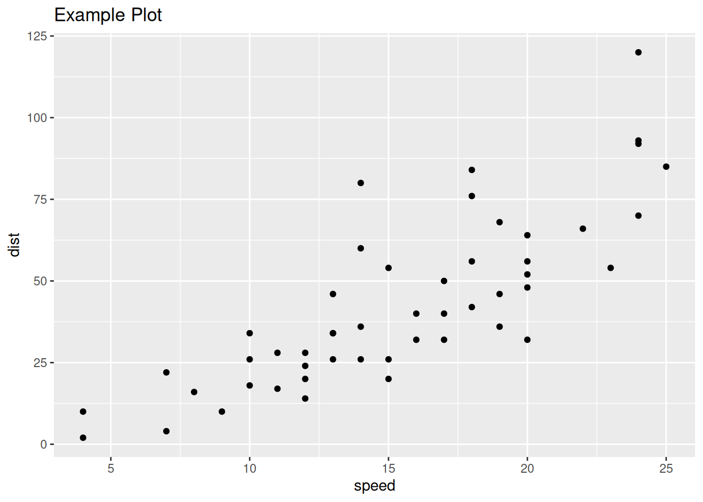

Creating R Plots without X11
Every now and then, I’ll have to work on a server where R has been compiled
without support for graphics. I thought this meant that I couldn’t make plots,
but that’s not the case! In this post, I’ll share a way to render plots
in an R installation that’s been compiled without graphics support
using the Cario library.
Normally, the easiest way around an R install without graphics support is to run your compute on the server you’re using, then download the results to your local computer and make the figures there. If you’re like me and work with restricted data, this likely isn’t an option for you and you might have to get inventive.
How do you know if you have this issue?
The easiest way to diagnose if you have this issue is to use the
capabilities() command in R, which reports on the features R was compiled
With. If you have FALSE under X11, jpeg, png, cairo, and tiff you are likely going
to have an issue. In my case, I have TRUE under jpeg, png, and tiff, cairo, but
they aren’t working because I don’t have X11 in my environment.
capabilities()
jpeg png tiff tcltk X11 aqua
TRUE TRUE TRUE TRUE FALSE FALSE
http/ftp sockets libxml fifo cledit iconv
TRUE TRUE TRUE TRUE TRUE TRUE
NLS Rprof profmem cairo ICU long.double
TRUE TRUE TRUE TRUE TRUE TRUE
libcurl
TRUEHow To Resolve The Issue
I thought that this wasn’t an issue that a regular user could fix, as it seems
like you would have to re-compile R to enable graphics support. As it turns
out, you can install the Caro package in R which provides another set of
graphics drivers and does not depend on X11, allowing you to render your graphs
without X11. The usage is very simple, but a bit clunky and I can’t get the
ggsave command to work with it.
Here’s how you can use Cario to render and save basic ggplot:
#install.packages(c("Cario","ggplot2"))
library(Cairo)
library(ggplot2)
Cairo(600, 600, file="basic_plot.png", type="png", bg="white") # open graphics device
ggplot(cars, aes(x=speed, y=dist)) + # plot a simple chart with ggplot
geom_point() +
ggtitle("Example Plot")
dev.off()Output:
A perfectly-rendered graph made without X11:
